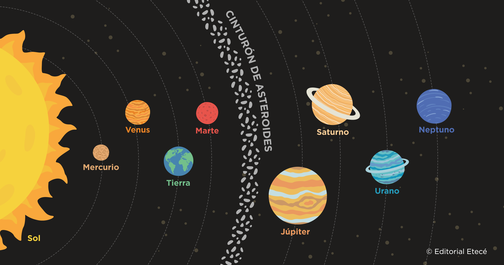

SISTEMA SOLAR
|
 |
|||||||||
|
El Sistema Solar es un sistema planetario donde una estrella central, el Sol, atrae gravitacionalmente a ocho planetas (Mercurio, Venus, la Tierra, Marte, Júpiter, Saturno, Urano y Neptuno), planetas enanos, lunas, asteroides y cometas. Nuestro Sol se encuentra en la galaxia Vía Láctea, en el Brazo de Orión, y es responsable de la energía y los movimientos que rigen a todos los cuerpos celestes de nuestro "vecindario cósmico". |
|||||||||
| Planeta/Astro | Tamaño (Diametro) | Distancia del Sol (UA) | Duración del Día | Duración del Año | Número de Lunas | Composición | Temperatura por medio de superficie | Máxima | Mínima |
| Sol | 696,340 km | 0 | 648 horas | 230 millones de años | 0 | Hidrogeno, helio, carbono, oxígeno y hierro | 5,500 a 6,000°C | 15 millones °C | 3500°C |
| Mercurio | 2,439.7 km | 0.39 | 1408 horas | 88 días | 0 | hierro, silicio, azufre y magnesio | 167°C | 427°C | -184°C |
| Venus | 6,051.8 km | 0.72 | 5832 horas | 225 días | 0 | Superficies rocosas, hierro, niquel y una fuerte atmosfera de CO2 | 465°C | 482°C | 464°C |
| Tierra | 6,378 km | 1 | 24 horas | 365 días | 1 | Núcleo metálico de hierro y niquel, una hidrosfera compuesta por agua, un manto rocoso y silicatado y una atmosfera compuesta por distintos gases | 15°C | 56.7°C | -89°C |
| Marte | 3,389.5 km | 1.52 | 25 horas | 687 días | 2 | Núcleo de hierro-níquel-azufre, un manto de silicato y una corteza de basalto rica en óxido de hierro | -65°C | 36°C | -123°C |
| Jupiter | 69,911 km | 5.20 | 10 horas | 4333 días | 95 | Mayoritariamente por hidrógeno (alrededor del 90%) y helio (alrededor del 10%), con un pequeño porcentaje de elementos más pesados | -110°C | 500°C | -145°C |
| Saturno | 58,232 km | 9.54 | 11 horas | 10,759 días | 274 | Hidrógeno (aproximadamente 90%) y helio (aproximadamente 5%), con pequeñas cantidades de metano, vapor de agua y amoníaco en su atmósfera | -140°C | -140°C | -191.15°C |
| Urano | 25,362 km | 19.22 | 17 horas | 30,687 días | 28 | Núcleo rocoso rodeado por una densa capa de fluidos fríos de agua, metano y amoníaco. Su atmósfera exterior está hecha principalmente de hidrógeno, helio y metano. | -195°C | -195°C | -224°C |
| Neptuno | 24,622 km | 30.06 | 16 horas | 60,190 días | 16 | "Hielo" (agua, metano y amoníaco) y gas, con una atmósfera de hidrógeno, helio y metano. | -218°C | -200°C | -240°C |
 |
 |
 |
|||||||